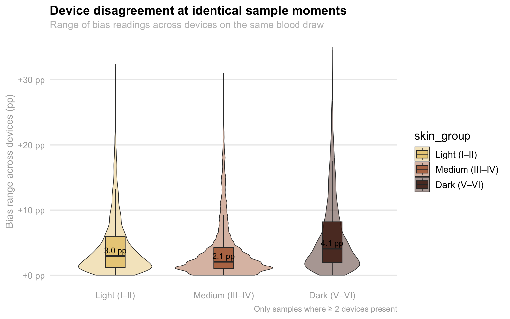
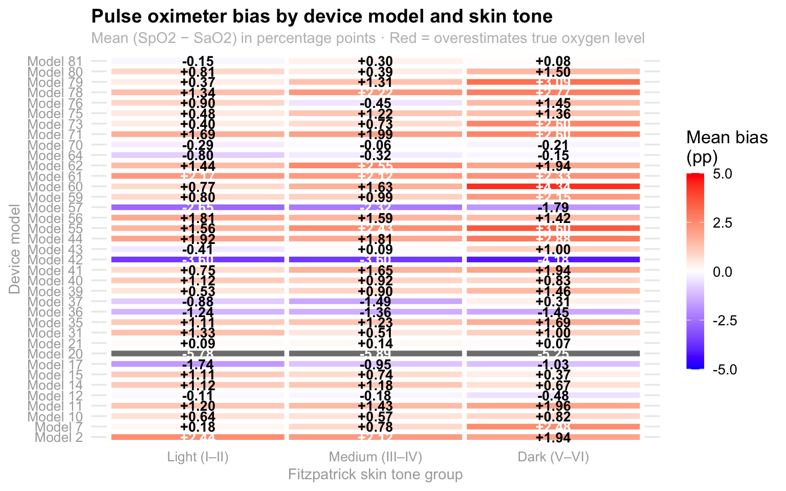
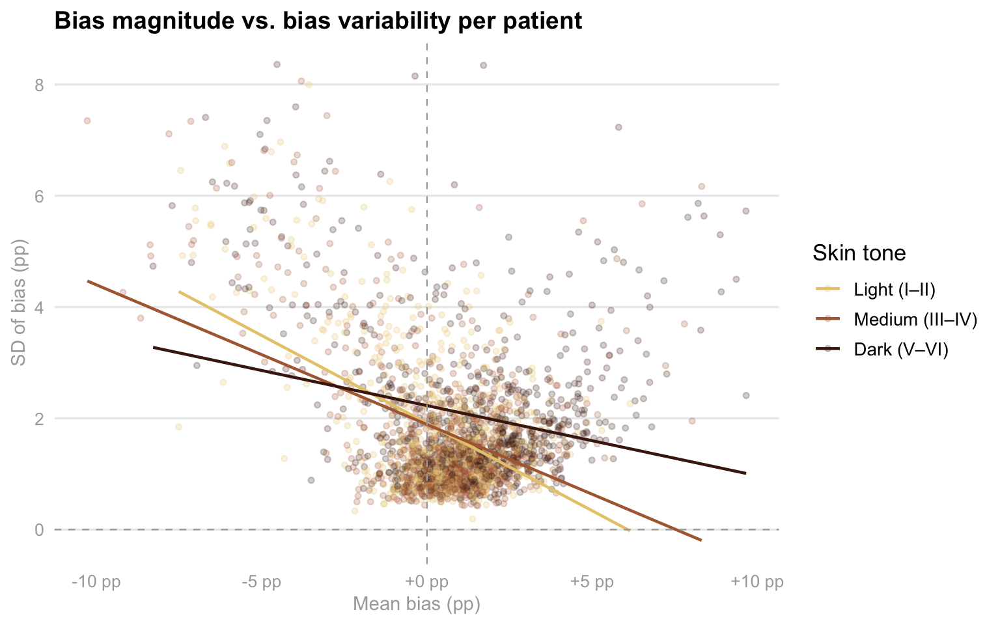
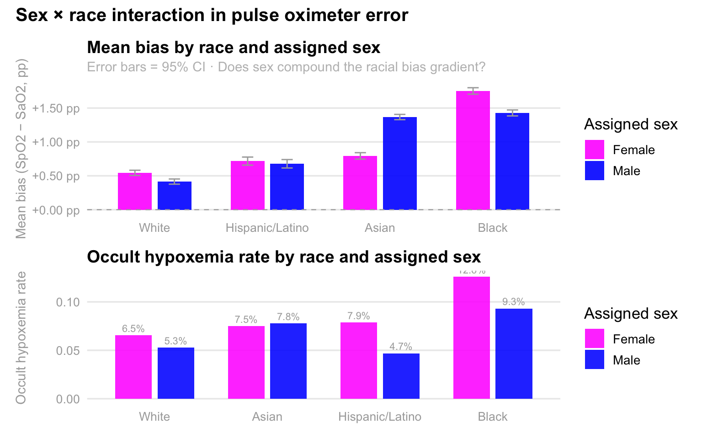

Individual EDA: Evaluating Demographic Disparities in Pulse Oximetry Accuracy
OpenOximetry Discharge Data
Overview
This EDA covers the OpenOximetry dataset:
- OpenOximetry (UCSF Hypoxia Lab) - Used to audit the clinical reliability of pulse oximeters by comparing their digital readings against the “gold standard” of direct blood oxygen measurements.
Setup
Show code
# Cleaned with William's support
oximetry <- pulseoximeter |>
inner_join(
bloodgas |> select(encounter_id, sample, so2),
by = c("encounter_id", "sample_number" = "sample")
) |>
rename(SpO2 = saturation, SaO2 = so2) |>
left_join(
encounter |> select(
encounter_id, patient_id, fitzpatrick, age_at_encounter
),
by = "encounter_id"
) |>
left_join(
patients |> select(patient_id, race, ethnicity),
by = "patient_id"
) |>
mutate(
bias = SpO2 - SaO2,
occult_hypoxemia = SpO2 >= 88 & SaO2 < 88,
skin_group = cut(
fitzpatrick,
breaks = c(0, 2, 4, 6),
labels = c("Light (I–II)", "Medium (III–IV)", "Dark (V–VI)"),
include.lowest = TRUE
),
race_eth = case_when(
ethnicity == "Hispanic" ~ "Hispanic/Latino",
str_detect(race, "African American") &
ethnicity == "Not Hispanic" ~ "Black",
race == "Caucasian" &
ethnicity == "Not Hispanic" ~ "White",
str_detect(race, "^Asian") &
ethnicity == "Not Hispanic" ~ "Asian",
TRUE ~ NA_character_)) |>
filter(!is.na(race_eth))
# Remove non-finite bias values caused by bad join rows
oximetry <- oximetry |>
filter(is.finite(bias), is.finite(SpO2), is.finite(SaO2))Show code
#Aestethics purposes
skin_pal <- c(
"Light (I–II)" = "#E8C97A",
"Medium (III–IV)" = "#B06840",
"Dark (V–VI)" = "#4A1E0E")
# Base theme applied to every plot
theme_eda <- function() {
theme_minimal(base_size = 13) +
theme(plot.title = element_text(size = 14, face = "bold", margin = margin(b = 4)),
plot.subtitle = element_text(size = 11, color = "gray"),
plot.caption = element_text(size = 9, color = "darkgray"),
axis.title = element_text(size = 11, color = "darkgray"),
axis.text = element_text(size = 10, color = "darkgray"),
panel.grid.major.x = element_blank(),
panel.grid.minor = element_blank(),
strip.text = element_text(size = 11, face = "bold", color = "darkgray"))}OpenOximetry Dataset
This group project focuses on analyzing the implications of inaccuracies in standard pulse oximeters. In this regard, through the analysis of relevant data, we have observed that oximeters, which function to detect blood oxygen levels, tend to exhibit wider margins of error for individuals with dark skin compared to those with light skin. Scientifically, this phenomenon is explained by the fact that dark skin contains a layer of melanin that impedes the unimpeded passage of the oximeter’s light beams through the skin, unlike in individuals with light skin, who lack these elevated levels of melanin. However, as a group, we believe this issue carries broader implications, and we intend to analyze how this phenomenon manifests across various demographic groups. In my specific analysis, I will focus on examining the biases associated with oximeter models and skin tone, specifically, the biases that arise among patients of different skin tones, and the interplay of these factors with respect to sex and race.
Analysis 1: Bias by device model and skin tone
Given that we are examining potential biases related to skin tone, it is crucial to consider the devices themselves. In this regard, my aim is to explore the variability in blood oxygen detection across individual devices, and to analyze whether there is a general pattern, specifically, if certain devices are less effective and thus skewing the overall data results across different skin colors, or if this is a generalized issue affecting all devices. This is a controlled within encounter comparison: same patient, only the device differs. Any bias difference between devices on the same sample is purely a device effect, not a patient effect.
Show code
# A tibble: 41 × 2
device_brand n
<int> <int>
1 59 25795
2 60 24912
3 73 6889
4 55 5276
5 71 5241
6 64 4679
7 70 3352
8 14 2521
9 41 2448
10 21 2391
# ℹ 31 more rowsThis is the total amount of all the devices that exist in this dataset, under the colum “device_brand”, togther with the number of dispositives for each one of the models, as seen, the most common model is the “59”, while the least common model is the “21”. As now, this does not tells us anything directly about the data, but is information that will become relevant while analyzing all the other devices and the the different skin colors.
Show code
# Same device disagreen within different samples
device_spread <- oximetry_top |>
filter(between(bias, -20, 20), !is.na(skin_group)) |>
group_by(encounter_id, sample_number, skin_group) |>
summarise(
bias_range = max(bias) - min(bias),
n_devices = n_distinct(device_brand),
.groups = "drop") |>
filter(n_devices >= 2)
p_spread <- device_spread |>
ggplot(aes(x = skin_group, y = bias_range, fill = skin_group)) +
geom_violin(alpha = 0.45, trim = TRUE, linewidth = 0.3) +
geom_boxplot(width = 0.18, outlier.shape = NA, alpha = 0.85, linewidth = 0.4) +
stat_summary(
fun = median, geom = "text",
aes(label = sprintf("%.1f pp", after_stat(y))),
vjust = -0.5, size = 3.2, color = "black") +
scale_fill_manual(values = skin_pal) +
scale_y_continuous(
labels = function(x) sprintf("%+.0f pp", x),
limits = c(0, NA)) +
labs(
title = "Device disagreement at identical sample moments",
subtitle = "Range of bias readings across devices on the same blood draw",
x = NULL, y = "Bias range across devices (pp)",
caption = "Only samples where ≥ 2 devices present") +
theme_eda()
p_spread
This visualization highlights a troubling lack of consistency in medical device readings when used on patients with darker skin tones. As we can see, there is a range of disagreement between two or more devices measuring the exact same blood sample at the same moment. While all groups show some level of discrepancy, the “Dark” skin tone category (V–VI) has a noticeably higher median disagreement of 4.1 pp compared to just 3.0 pp for light skin and 2.1 pp for medium skin. More importantly, the “tail” of the dark skin plot stretches significantly higher, reaching extremes of over +30 pp in bias range. This means that for patients with the darkest skin, two different sensors are far more likely to give wildly conflicting results, creating a dangerous level of clinical uncertainty that isn’t as prevalent for lighter-skinned patients.
Show code
# Looking at each individual oxymeter
device_skin_summary <- oximetry_top |>
filter(!is.na(skin_group), between(bias, -20, 20)) |>
group_by(device_label, skin_group) |>
summarise(mean_bias = mean(bias, na.rm = TRUE), n = n(), .groups = "drop")
p_heatmap <- device_skin_summary |>
ggplot(aes(x = skin_group, y = device_label, fill = mean_bias)) +
geom_tile(color = "white", linewidth = 1.6) +
geom_text(aes(label = sprintf("%+.2f", mean_bias), color = abs(mean_bias) > 2), size = 3.6, fontface = "bold", show.legend = FALSE) +
scale_color_manual(values = c("TRUE" = "white", "FALSE" = "black")) +
scale_fill_gradient2(
low = "blue",
mid = "white",
high = "red",
midpoint = 0,
limits = c(-5, 5),
name = "Mean bias\n(pp)",
guide = guide_colorbar( barwidth = 0.9, barheight = 10, title.position = "top")) +
labs(title = "Pulse oximeter bias by device model and skin tone",
subtitle = "Mean (SpO2 − SaO2) in percentage points · Red = overestimates true oxygen level",
x = "Fitzpatrick skin tone group", y = "Device model") +
theme_eda()
p_heatmap
This heatmap illustrates how pulse oximeter accuracy varies across different device models and skin tones, specifically highlighting the “mean bias” or the difference between the device’s reading (Sp02) and actual blood oxygen levels (Sa02) with the color scale indicating whether a device tends to overestimate (red/orange) or underestimate (blue/purple) the true oxygen saturation. A quick look at the darker skin tone column reveals a noticeable trend toward more intense orange and red hues, suggesting that many of these models consistently overestimate oxygen levels in individuals with darker skin. This discrepancy is critical because an overestimation could potentially mask dangerously low oxygen levels, highlighting a significant technical bias in how these medical devices perform across diverse populations. Therefore, because the majority of them present this orange/red color, it could be said that this seems to be a problem that the big majority of the devices have in common and it is not just one device affecting the entire dataset, which reafirms the importance of this problem since it is common across all devices.
Analysis 2: Within patient bias stability across samples
On that note, analyzing within-patient bias stability is also essential because it helps us distinguish between a device that is consistently off and one that is dangerously unpredictable. If a pulse oximeter has a high mean bias but stays stable, a clinician can at least anticipate the error; however, high volatility within a single session, measured here through standard deviation and range, suggests that the device is erratic. This “jitter” is particularly risky in a clinical setting because it can lead to intermittent misdiagnosis, where a patient might appear stable during one check but be in respiratory distress the next.
Show code
p_scatter_risk <- within_patient |>
filter(!is.na(skin_group)) |>
ggplot(aes(x = mean_bias, y = sd_bias, color = skin_group)) +
geom_point(alpha = 0.22, size = 1.2) +
geom_smooth(method = "lm", se = FALSE, linewidth = 0.8) +
geom_vline(xintercept = 0, linetype = "dashed", color = "darkgray", linewidth = 0.4) +
geom_hline(yintercept = 0, linetype = "dashed", color = "darkgray", linewidth = 0.4) +
scale_color_manual(values = skin_pal) +
scale_x_continuous(labels = function(x) sprintf("%+.0f pp", x)) +
labs(
title = "Bias magnitude vs. bias variability per patient",
x = "Mean bias (pp)", y = "SD of bias (pp)",
color = "Skin tone") +
theme_eda()
p_scatter_risk
As you can see in this scatter plot, this examines the relationship between how much a device is off on average (mean bias) and how much that error fluctuates during a single session (SD of bias), providing a clear picture of device reliability across different skin tones. Interestingly, while the trend lines show that variability generally decreases as mean bias moves into positive territory, the distribution of data points reveals a troubling pattern for patients in the “Dark” skin tone group. These points are notably more scattered toward the right side of the x-axis, indicating that for these individuals, devices are not just more likely to overestimate oxygen levels, but they often do so with a wide range of inconsistency. This combination of high positive bias and high variability is the “worst-case scenario” for clinical safety, as it suggests that the readings for patients with darker skin are both consistently over-optimistic and technically unstable, making it significantly harder for medical staff to trust the data during critical moments of care. This is another factor imporant to consider in our analysis since it contributes with the fact of knowing that patients with darker skin colors are generally worse off than the patients with lighter skin colors.
Analysis 3: Sex and Race Interactions Between Patients
At the same time, I am also interesrted in analyzing the intersection of sex and race with regards to this topic. For me, this is critical because it uncovers whether clinical disadvantages are compounded for specific subgroups, such as Black or Hispanic women, rather than just affecting racial groups uniformly. Pulse oximetry performance can be influenced by physiological differences, like skin thickness, peripheral perfusion, and hemoglobin level, that often vary by both sex and ethnicity. However, the patriarchal society we currently live on has also influenciated the way in which women, specially women of color, are treated in medical settings. As a woman of color myself, I want to perform this analysis by calculating the mean bias and occult hypoxemia rates across these intersecting identities, seeing if we can identify if certain patients face a “double burden” of inaccuracy that simple, single variable analyses might miss. This level of detail is necessary to determine if current medical device algorithms are failing certain populations more than others, which is a vital step in addressing systemic health inequities and ensuring that life saving interventions are triggered reliably for every patient regardless of their demographic profile.
Show code
if (!"assigned_sex" %in% names(oximetry)) {
oximetry <- oximetry |>
left_join(patients |> select(patient_id, assigned_sex), by = "patient_id")}
sex_race <- oximetry |>
filter(!is.na(race_eth), !is.na(assigned_sex), assigned_sex %in% c("Female", "Male"), between(bias, -20, 20)) |>
group_by(race_eth, assigned_sex) |>
summarise(
mean_bias = mean(bias, na.rm = TRUE),
se_bias = sd(bias, na.rm = TRUE) / sqrt(n()),
oh_rate = mean(occult_hypoxemia, na.rm = TRUE),
n = n(), .groups = "drop") |>
filter(n >= 20)
sex_pal <- c("Female" = "magenta", "Male" = "blue")Show code
p_sex_bias <- sex_race |>
mutate(race_eth = fct_reorder(race_eth, mean_bias, max)) |>
ggplot(aes(x = race_eth, y = mean_bias, fill = assigned_sex)) +
geom_col(position = position_dodge(width = 0.70), width = 0.60, alpha = 0.90) +
geom_errorbar(aes(ymin = mean_bias - 2 * se_bias, ymax = mean_bias + 2 * se_bias), position = position_dodge(width = 0.70), width = 0.20, linewidth = 0.5, color = "darkgray") +
geom_hline(yintercept = 0, linetype = "dashed", color = "darkgray", linewidth = 0.4) +
scale_fill_manual(values = sex_pal, name = "Assigned sex") +
scale_y_continuous(labels = function(x) sprintf("%+.2f pp", x)) +
labs(title = "Mean bias by race and assigned sex",
subtitle = "Error bars = 95% CI · Does sex compound the racial bias gradient?",
x = NULL, y = "Mean bias (SpO2 − SaO2, pp)") +
theme_eda()
# Occult hypoxemia rate by race and assigned sex
p_sex_oh <- sex_race |>
mutate(race_eth = fct_reorder(race_eth, oh_rate, max)) |>
ggplot(aes(x = race_eth, y = oh_rate, fill = assigned_sex)) +
geom_col(position = position_dodge(width = 0.75), width = 0.65, alpha = 0.88) +
geom_text(
aes(label = percent(oh_rate, accuracy = 0.1)),
position = position_dodge(width = 0.75),
vjust = -0.5, size = 2.9, color = "darkgray") +
scale_fill_manual(values = sex_pal, name = "Assigned sex") +
labs(
title = "Occult hypoxemia rate by race and assigned sex",
x = NULL, y = "Occult hypoxemia rate") +
theme_eda()
(p_sex_bias / p_sex_oh) +
plot_annotation(
title = "Sex × race interaction in pulse oximeter error",
theme = theme(plot.title = element_text(size = 15, face = "bold")))
As expected, these charts reveal a striking interaction between race and sex, demonstrating that pulse oximeter inaccuracies are not evenly distributed across demographics. In the top panel, we see that mean bias, the degree to which the device overestimates oxygen levels, is consistently higher for Black and Asian patients compared to White and Hispanic patients, but the sex-based disparity is most pronounced among Black individuals, where females experience significantly higher overestimation than males. This technical error translates directly into clinical risk, as shown in the bottom panel, where the rate of occult hypoxemia peaks sharply for Black females at 12.6%. This means that for more than one in ten Black women, the device reports a “safe” oxygen level when they are actually experiencing dangerously low saturation. Collectively, the data suggests that while racial bias is a primary driver of device failure, being female often compounds this risk, particularly for Black and Asian patients, potentially leading to systemic delays in care for these specific groups.